# Required Materials
Software
The below software is required for this guide, except those marked as optional:
* Older versions of Unity may be supported, like Unity 2021.3, however these have not been recently tested with this workflow.
Hardware
This guide supports the following hardware options:
| Motion Capture Gloves (choose one) | Image |
|---|
| StretchSense Studio Gloves, Pro Studio for Xsens, Pro Studio. | 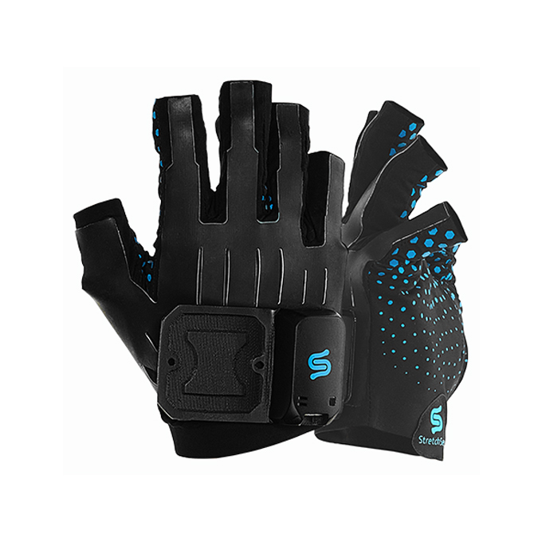 |
| Pro Fidelity | 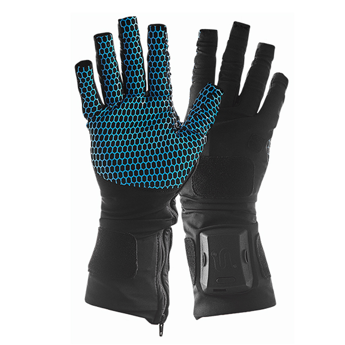 |
| VR Headsets (choose one) | Image |
|---|
Vive Pro | 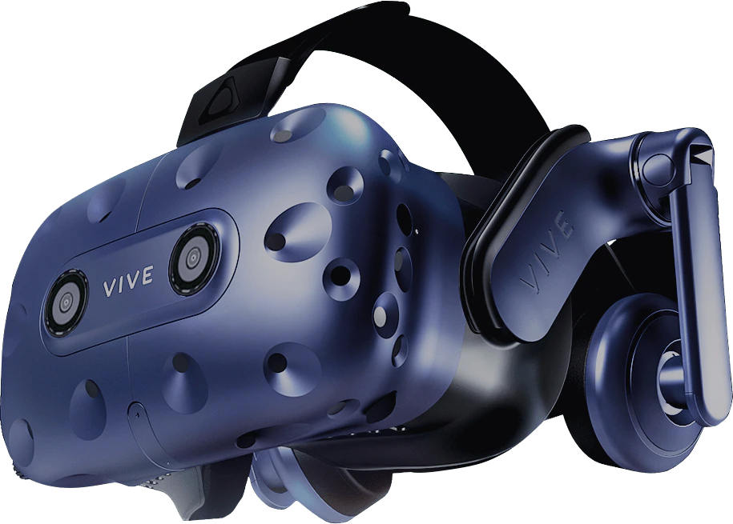 |
Vive Pro 2 | 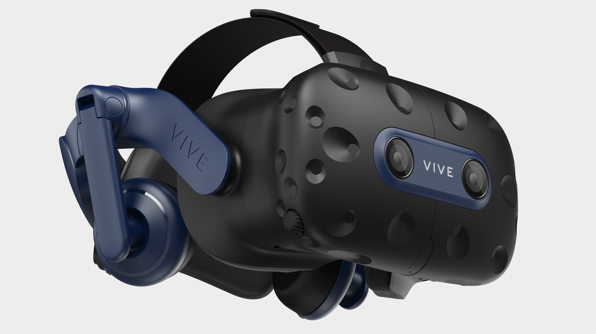 |
| Valve Index (headset only) |  |
Other SteamVR & Valve Base Station 2.0 compatible VR headset. | 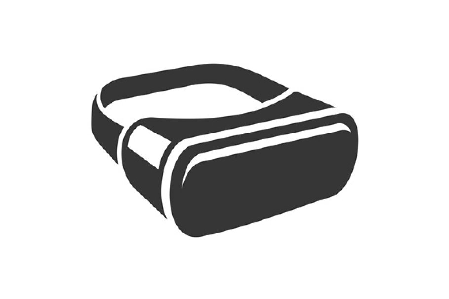 |
| Other Required Hardware | Image |
|---|
3-4x Valve Index Base Station 2.0
(A minimum of 3 base stations are required for optimal tracking performance) | 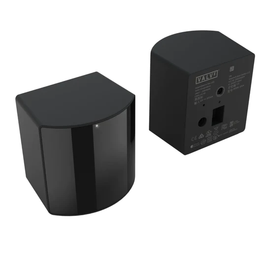 |
1. Initial Setup
These steps will take you through how to connect and configure two trackers for use with SteamVR.
1. Download and install the Steam Desktop client and SteamVR.
2. Launch SteamVR and let it run the first-time setup.
NOTE: For this example, we are using SteamVR Version 2.5.5 with an HTC Vive Pro, 3x Base Station 2.0s, and 2x Tundra Trackers. These instructions may vary slightly depending on your headset so make sure to follow the initial setup instructions from the headset manufacturer.
3. Connect your headset and base stations, conduct the Room Setup and choose Room Scale when prompted.
4. (optional) With SteamVR running, go to the SteamVR settings menu and toggle Show Advanced Settings. Adjust the following setting: Video → Pause VR when the headset is idle and set it to Off. This will allow SteamVR to send tracker data to Unity when the headset is not worn.
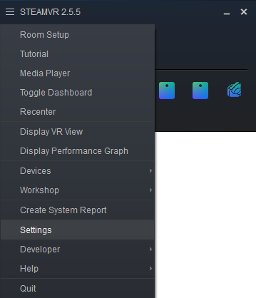

5. Mount each Tundra Tracker to the track strap as per the Correcting Hand Rig Offsets for Tundra Trackers section further below in this guide. Ensure that the trackers are fastened tightly.
6. Connect your Tundra Trackers as per the device manufacturers instructions. Once the trackers are paired right-click on one of the trackers and click Manage Trackers (see image below).
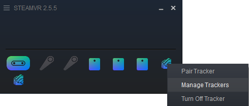
In the Steam VR settings select Manage Trackers (see below)
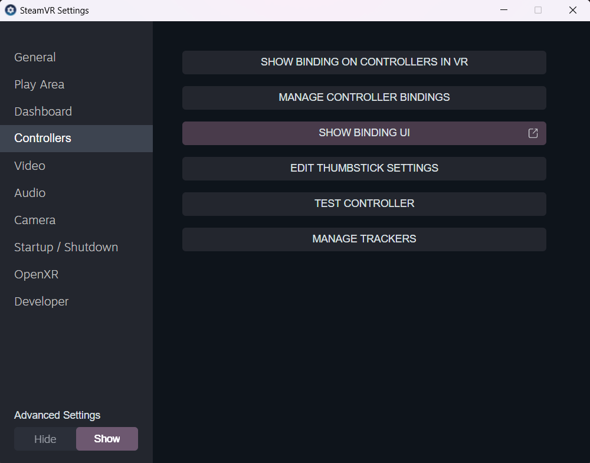
For the trackers you have connected leave the Tracker Role set to Left Elbow or Right Elbow depending on which hand you have attached the trackers to. Click Close and also close SteamVR Settings.
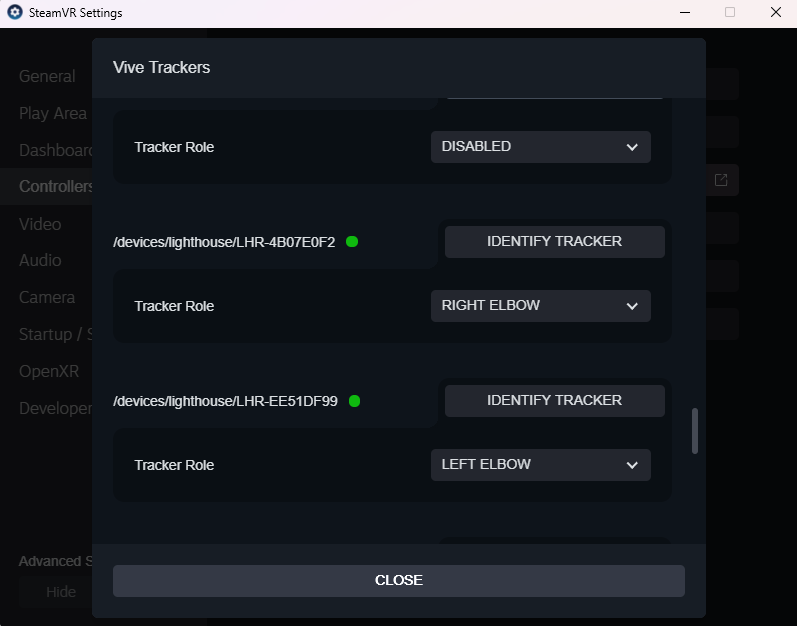
7. Leave SteamVR running in the background and begin to set up your Unity project.
2. Unity Project Setup
These steps will explain how to setup your Unity project to receive tracker data from SteamVR. It assumes you have already setup your character with the StretchSense Plugin for Unity and have configured two RetargetHand scripts, one for each of your character’s hands.
The instructions are based on a tutorial from VR With Andrew which explains the tracker setup instructions below in Unity 2020, which should also work for Unity 2021 and Unity 2022 with slight modifications.
1. Add the following packages via the Unity Package Manager (UPM):
2. Download and add the following Vive Tracker device profile and import into your project:
HTCXRTrackerProfile.unitypackage
3. Edit your project’s OpenXR settings and under XR Plugin Management in the Interaction Profiles list, check the entry for HTC Vive Tracker OpenXR.
4. Set the Play Mode OpenXR Runtime to SteamVR.
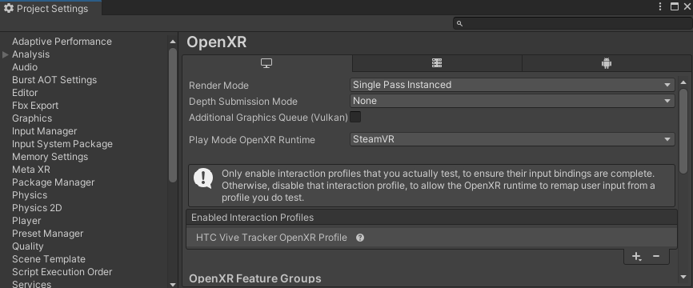
Setting the OpenXR runtime in Play Mode to SteamVR
5. Setup your input actions to bind the Tundra tracker position and rotations so they can be used to animate the hand in space.
a. Create an Input Action Asset in your project asset browser within the Unity Editor. Alternately, download the XR Tracker Input Actions asset below and import it into your project. It is setup to work with Tundra or Vive trackers set to the Left Elbow or Right Elbow roles and supports additional tracker roles for Chest, Waist, Left Foot, Right Foot.
b. Create a GameObject in your scene then go to Component > Input > Input Action Manager to add the component to the GameObject you created.
c. Add the correct input asset mapping for each tracker as follows (the example shows the configuration of the RightElbow tracker role in Unity):
i. Tracker RightElbow Position action (Vector 3) - Position binding path:
<XRTracker>{Right Elbow}/devicePose/position

ii. Tracker RightElbow Rotation action (Quaternion) - Rotation binding path:
<XRTracker>{Right Elbow}/devicePose/rotation
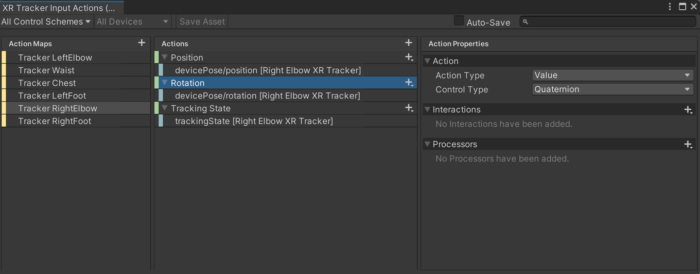
iii. Tracker RightElbow Tracking State action (Integer) - Rotation binding path:
<XRTracker>{Right Elbow}/trackingState
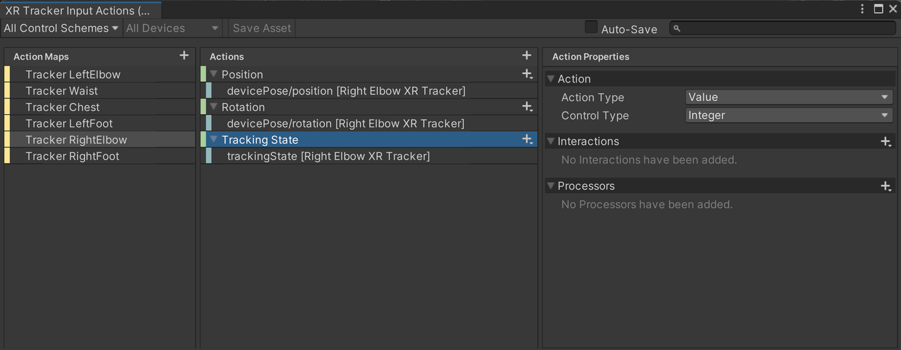
6. If you have additional trackers, you can use this process to enable full body tracking for your legs, knees and elbows or other SteamVR tracker roles, in addition to your hands.
Tracking hands without Unity XR Interaction Toolkit
1. If not using the XR Interaction Toolkit, and you have a rigged humanoid character, add Tracked Pose Driver (Input System) component to each wrist joint of your character’s skeleton and configure this to map to an input action set and position and rotation action maps in the Unity Input System. This will directly set the position and rotation of the hands.

If you need to mix this with animation clips played in an AnimationController, change the Update Type to Late Update.
Tracking hands using Unity XR Interaction Toolkit
1. If using the XR Interaction Toolkit, in the root of your scene, add a GameObject with an Input Action Manager component and add the input action set created in previous steps. This will activate the actions applied as references to the Tracked Pose Driver. See VR With Andrew’s guide on using custom input actions for more detail on how this works with the Unity XR Interaction Toolkit - similar principles apply when using input actions to drive the rotation and position of joints on a character.
2. Create two GameObjects, one called XR Tracker Left and XR Tracker Right and add a Tracked Pose Driver (Input System) component to both.
3. Under the respective GameObjects, add GameObjects called XR Tracker Left Target and XR Tracker Right Target. These will be used in later steps to adjust the offset of the left and right hands relative to the trackers. We recommend adding an arrow model as a child of each of these to help visualize the position and rotation of the target.

Scene hierarchy showing the XR Tracker structure
Using Tundra Trackers and XRI Without Humanoid Character
1. Add two GameObjects to your scene called Left Wrist XR Stabilized and Right Wrist XR Stabilized.
2. Add the XRTransformStabilizer component to these GameObject, setting the reference to the XR Tracker Left Target or XR Tracker Right Target GameObjects respectively.
Using Tundra Trackers and XRI With Humanoid Character
1. If you have a rigged humanoid character, add the XRTransformStabilizer component to the left- and right-hand wrist bone Transforms, setting the reference to the XR Tracker Left Target or XR Tracker Right Target GameObjects respectively.
3. Mounting Tundra Trackers
For each of these mounting options, you will need to adjust the GameObjects that receive the XR Tracker position and rotation to compensate for the position of the physical tracker relative to your gloved hand:
-
If using the XR Interaction Toolkit, adjust the position and rotation of the left and right hand GameObjects that have XRTransformStabilizer components added (see XR Tracker Left Stabilized and XR Tracker Right Stabilized below. This can be done by adding a Rig Offset Left and Rig Offset Right parent to your hand model game objects.
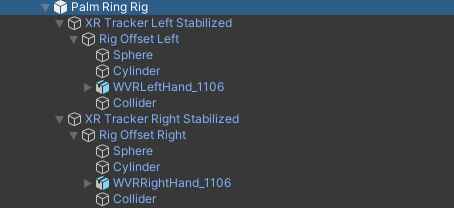
-
If not using the XR Interaction Toolkit, add Rig Offset Left and Rig Offset Right GameObjects as children of XR Tracker Target Left and XR Tracker Target Right. Place your hand rig inside these, alongside the tracker model to visualize the offset between the tracker and the hand rig. Adjust any position and rotation offsets of Rig Offset Left and Rig Offset Right as needed.

If not using a rigged humanoid character, we recommend you adjust the hand model position and rotation, so these appear mirrored and facing a good default direction prior to XR tracker data being applied. This will make it easier to adjust hand model offsets prior to starting Play Mode in the editor.
StretchSense Studio Optical / Universal Mount Offset Correction
StretchSense provides an optional first-party mount to attach smaller trackers directly to StretchSense Studio Gloves. This provides the best balance of tracking accuracy for the hand orientation as it accounts for wrist bending like with the Palm Ring straps but doesn’t put extra pressure on your hand.
When ordering Studio Gloves from the StretchSense website select Optical/Universal Mounts from the drop-down menu.
-
Mount the trackers using a 1/4 inch photography screw with the Tundra base plate attached to the tracker.
-
Orient the trackers so the power LED is facing away diagonally from your wrist.
-
The tracker should be aligned so the base is square with the mount.
-
The USB charging port should be facing towards your wrist diagonally. This allows charging both the glove and Tundra trackers with the charge cables facing the same direction.
-
The orientation of both trackers on the mounts should be mirrored.
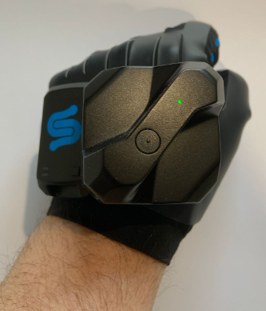
StretchSense Optical / Universal Mount on the left hand
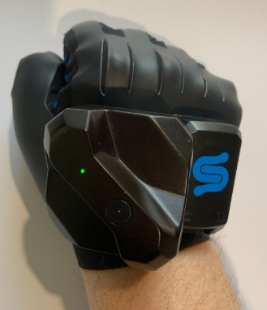
StretchSense Optical / Universal Mount on the right hand
-
You should only need minor adjustments to the position offsets to account for the raised mount on the glove. The ones suggested below are close to where the tracker will sit on a Size 2 Studio Glove.
-
In most cases you will just need to set the rotation of Rig Offset Left and Rig Offset Right to correct the hand orientation in your Unity scene.
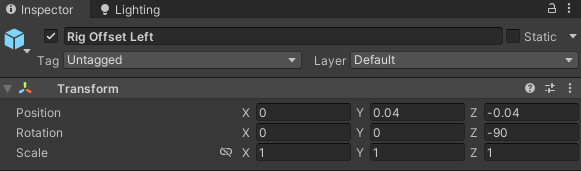
Left Hand offsets for a Size 2 Studio Glove
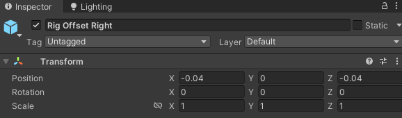
Right Hand offsets for a Size 2 Studio Glove
The optical / universal mount for Studio Gloves causes some slight wobbling of the trackers during use. We recommend using the XRTransformStabilizer from the Unity XR Interaction Toolkit to correct for this.
For XR applications where the user must move their hands quickly, we recommend using palm ring straps to mount Tundra Trackers instead of the optical / universal mount.
Correcting Hand Rig Offsets for Tundra Trackers
Different Tundra Tracker mounting positions need adjusted offsets for the Rig Offset Left and Rig Offset Right GameObjects that hold your hand rig. The offsets will be different depending on your hand model’s orientation during import in its source file. The below examples are for the WVRLeftHand_1106 and WVRRightHand_1106 models that come with the VIVE-Wave and VIVE-OpenXR SDKs, assuming that you follow the mounting orientations as pictured.
Wrist Strap Hand Offset Correction
See the Unity VR Vive Tracker guides section for Wrist Strap Hand Offset Correction on how to mount Tundra trackers to this kind of strap. Ideally do this so the tracker is oriented in your Unity scene so minimal rotation offset adjustment is required.
Palm Ring Straps
See the Unity VR Vive Tracker guide section for Palm Ring Straps on how to mount Tundra trackers to this kind of strap. You will need to adjust the rotation of the tracker so both trackers are mirrored. Ideally do this so the tracker is oriented in your Unity scene so minimal rotation offset adjustment is required.
4. Running the Project
1. Start SteamVR
2. Make sure your left- and right-hand trackers are turned on. You must have SteamVR running, the SteamVR dashboard closed, and the trackers turned on with a tracker role set in order for Unity to detect them in play mode within the Editor or when running a standalone build of your Unity app.
3. Press “Play” in the Unity Editor or run the standalone build.
4. Check the fingers on your animated hand rig or character move correctly.
5. If the headset goes to sleep no tracker data for position and rotation will come through until the headset light sensor inside the headset is covered or worn on the user’s head. You can change this behavior by toggling off Video → Pause VR when headset is idle in the SteamVR advanced settings, otherwise you will also need the headset on to receive tracker data in Unity.